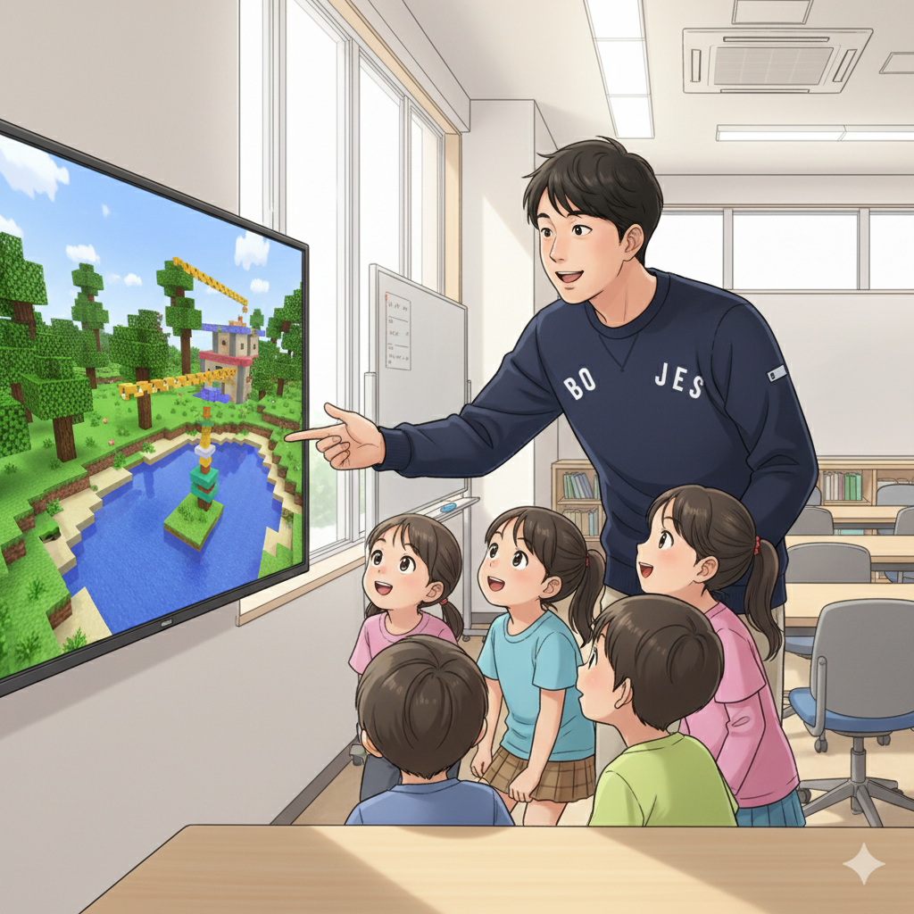

好きを力に変える！マインクラフトとプログラミングの出会い (CTO)
「ゲームばかりして…」かつてCTOもそう言われていました。特にマインクラフトに夢中で、毎日何時間も建築や冒険に没頭。でも、その熱中こそが彼の才能の原石だったんです。if塾で塾頭と出会い、マインクラフトの奥深さに触れるうち、コマンドブロックを使ったプログラミングに興味を持つようになりました。
コマンドブロックは、マインクラフトの世界で複雑な処理を可能にする魔法のブロック。これを使いこなすには、論理的思考とプログラミングの知識が不可欠です。CTOは、ASDの特性である細部へのこだわりと、ADHDの特性である並外れた集中力を活かし、独学でプログラミングスキルを習得。今では、if塾のICT教育を支える中心人物として活躍しています。
ASD ICT 才能は、決して机上の空論ではありません。彼の成長は、それを証明しています。
成功体験の積み重ねが自信に！ゲーム開発で変わる子どもたち (塾長)

塾長自身も、中学時代は特別支援学級に通っていました。ADHD ゲーム 集中力という組み合わせに悩まされた時期もあったそうです。しかし、高校で塾頭と出会い、自分の特性を理解し、強みに変える方法を学びました。彼は言います。「小さな成功体験の積み重ねが、自信につながるんだ」と。
if塾では、マインクラフトを使ったゲーム開発を通じて、子どもたちがプログラミングの基礎を学びます。最初は簡単な命令から始め、徐々に複雑な処理に挑戦。自分で作ったものが動く喜び、仲間と協力して一つの作品を作り上げる達成感を味わうことで、子どもたちは自信をつけていきます。
塾長は自身の経験から、子どもたちの小さな変化を見逃しません。「すごいね！」「よく頑張ったね！」と、一人ひとりの努力を認め、褒めることで、子どもたちのモチベーションを高めています。
eスポーツも才能開花のチャンス！集中力と戦略性を活かす (Y君, 塾頭)
if塾には、eスポーツで才能を開花させたY君という生徒がいます。彼は、特定のゲームに対する並外れた集中力と、戦略的な思考力を持っていました。eスポーツ 発達障害と聞くと、ネガティブなイメージを持つ人もいるかもしれませんが、Y君は、その才能を活かし、プロのeスポーツプレイヤーを目指しています。
塾頭は、Y君の才能を見抜き、集団での協調性やコミュニケーション能力を育むためのサポートを行いました。また、プロのeスポーツプレイヤーとして活躍するための心構えや、自己管理の方法なども教えています。
Y君は、if塾での経験を通じて、自分の才能に自信を持ち、夢に向かって努力するようになりました。彼は言います。「if塾がなかったら、今の自分はなかった」と。
if塾は、Y君のように、自分の特性を活かして、夢を叶えたいと願う子どもたちを応援しています。
🎯 興味を持っていただいた方へ
if塾では、発達特性を持つ子どもたちの「好き」を「才能」に変える教育を行っています。現在の記事内容と実際の活動に大きなズレはありませんが、詳細については直接お問い合わせください。
📌 記事について
この記事は、塾頭による完全自動化への挑戦としてAIが自動生成しています。将来的には塾頭が執筆しているような記事になることを目指しており、現時点では事実と異なる内容が含まれる可能性があります。最新の正確な情報については、お問い合わせフォームよりご確認ください。
🤖 Generated with AI - if塾のブログ自動化プロジェクト